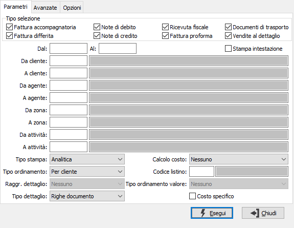
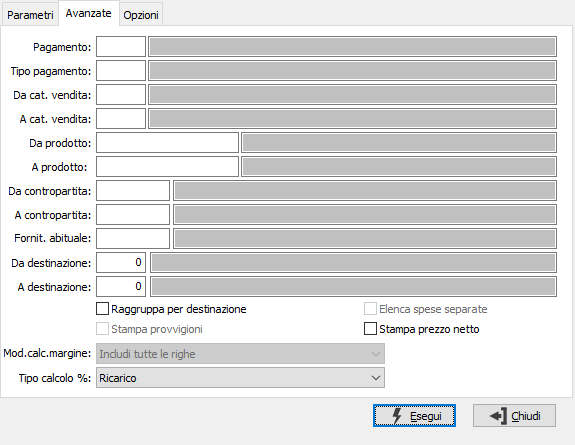
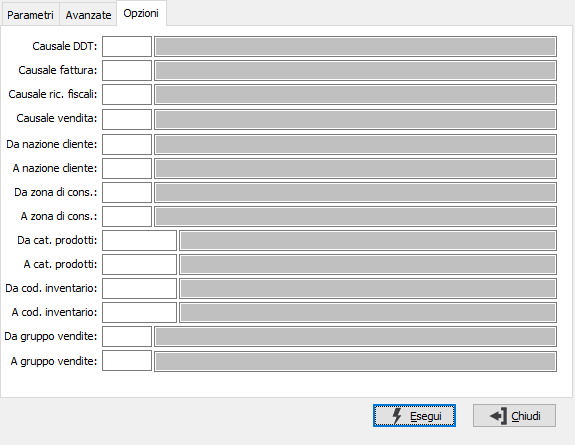

Analisi vendite
Il programma consente di analizzare le vendite effettuate considerando tutte o parte delle tipologie di documento gestite. L'analisi contiene tre pagine di parametri.

TIPO SELEZIONE: attraverso le caselle è possibile selezionare quali documenti includere nell'analisi. La spunta indica di considerare il tipo di documento, la casella vuota lo esclude dalla selezione.
DA DATA: data documento da cui si vuole iniziare la selezione. Confermando a vuoto, la selezione inizia dalla prima data valida.
A DATA: data documento con cui si vuole concludere la selezione. Confermando a vuoto, la selezione termina con l'ultima data valida.
STAMPA INTESTAZIONE: indica se stampare una pagina con i criteri di selezione della stampa, l’operatore che l’ ha eseguita, la data e l’ora (casella con segno di spunta).
DA CLIENTE: codice del cliente, presente in anagrafica, da cui si vuole iniziare la stampa. Confermando a vuoto, la stampa inizia dal primo codice valido. Sul campo sono attive le funzioni di ricerca (F9).
A CLIENTE: codice del cliente, presente in anagrafica, con cui si vuole terminare la stampa. Confermando a vuoto, la stampa termina con l'ultimo codice valido. Sul campo sono attive le funzioni di ricerca (F9).
DA AGENTE: codice dell'agente, da cui si vuole iniziare la stampa. Confermando a vuoto, la stampa inizia dal primo codice valido. Sul campo sono attive le funzioni di ricerca (F9).
A AGENTE: codice dell'agente, con cui si vuole terminare la stampa. Confermando a vuoto, la stampa termina con l'ultimo codice valido. Sul campo sono attive le funzioni di ricerca (F9).
DA ZONA: codice della zona, da cui si vuole iniziare la stampa. Confermando a vuoto, la stampa inizia dal primo codice valido. Sul campo sono attive le funzioni di ricerca (F9).
A ZONA: codice della zona, con cui si vuole terminare la stampa. Confermando a vuoto, la stampa termina con l'ultimo codice valido. Sul campo sono attive le funzioni di ricerca (F9).
DA ATTIVITÀ: codice dell'attività, da cui si vuole iniziare la stampa. Confermando a vuoto, la stampa inizia dal primo codice valido. Sul campo sono attive le funzioni di ricerca (F9).
A ATTIVITÀ: codice dell'attività, con cui si vuole terminare la stampa. Confermando a vuoto, la stampa termina con l'ultimo codice valido. Sul campo sono attive le funzioni di ricerca (F9).
TIPO STAMPA: definisce se effettuare la stampa in formato analitico, sintetico o raggruppato.
TIPO ORDINAMENTO: definisce il criterio di ordinamento dei dati in stampa; valori possibili:
per cliente
per agente
per zona
per pagamento
per attività
per categoria di vendita
per numero documento
per contropartita
per prodotto
RAGGRUPPA DETTAGLIO: il campo è attivo solo per tipo stampa raggruppato; definisce il criterio di raggruppamento del dettaglio valori in stampa; valori possibili:
nessuno
per cliente
per agente
per zona
per pagamento
per attività
per categoria di vendita
per contropartita
TIPO DETTAGLIO: il campo è attivo solo per tipo stampa analitica; definisce il dettaglio valori da stampare; valori possibili:
nessuno
testa documento
righe documento
CALCOLO COSTO: definisce se e su che base deve essere determinato il costo relativo al documento; valori possibili: nessuno, prezzo medio, costo ultimo carico, costo di mercato, prezzo di vendita o listino. Se gestito il calcolo del costo, sarà determinato il costo e rapportato al valore del documento fornendo il margine in valore ed in percentuale.
CODICE LISTINO: codice del listino prezzi da utilizzare per ricercare il costo per il calcolo costo da listino. Sul campo sono attive le funzioni di ricerca (F9) sulla tabella listini.
TIPO ORDINAMENTO VALORE: il campo è attivo solo in combinazione con altri parametri; definisce l'ordinamento dei valori, valori possibili: nessuno, crescente, decrescente.
COSTO SPECIFICO: definisce se ignorare le normali valorizzazioni del calcolo costo e prelevare il prezzo indicato sull’ordine fornitore generato dall’ordine cliente, se attiva la gestione del codice fornitore sugli ordini (casella con segno di spunta).
Ulteriori criteri di selezione possono essere inseriti nella sezione Avanzate:

PAGAMENTO: indica il codice del pagamento al quale si vuole limitare la selezione dei dati. Sul campo sono attive le funzioni di ricerca (F9).
TIPO PAGAMENTO: indica il tipo di pagamento al quale si vuole limitare la selezione dei dati. Sul campo sono attive le funzioni di ricerca (F9).
DA CATEGORIA DI VENDITA: codice della categoria di vendita, da cui si vuole iniziare la stampa. Confermando a vuoto, la stampa inizia dal primo codice valido. Sul campo sono attive le funzioni di ricerca (F9).
A CATEGORIA DI VENDITA: codice della categoria di vendita, con cui si vuole terminare la stampa. Confermando a vuoto, la stampa termina con l'ultimo codice valido. Sul campo sono attive le funzioni di ricerca (F9).
DA PRODOTTO: codice dell'articolo, presente in anagrafica Prodotti, da cui si vuole iniziare la stampa. Confermando a vuoto, la stampa inizia dal primo codice valido. Sul campo sono attive le funzioni di ricerca (F9).
A PRODOTTO: codice dell'articolo, presente in anagrafica Prodotti, con cui si vuole terminare la stampa. Confermando a vuoto, la stampa termina con l'ultimo codice valido. Sul campo sono attive le funzioni di ricerca (F9).
DA CONTROPARTITA: codice della contropartita, da cui si vuole iniziare la stampa. Confermando a vuoto, la stampa inizia dal primo codice valido. Sul campo sono attive le funzioni di ricerca (F9).
A CONTROPARTITA: codice della contropartita, con cui si vuole terminare la stampa. Confermando a vuoto, la stampa termina con l'ultimo codice valido. Sul campo sono attive le funzioni di ricerca (F9).
FORNITORE ABITUALE: eventuale codice del fornitore abituale, riferito ai prodotti, per cui effettuare la selezione. Sul campo sono attive le funzioni di ricerca (F9).
DA DESTINAZIONE: codice della destinazione, da cui si vuole iniziare la stampa. Confermando a vuoto, la stampa inizia dal primo codice valido. Sul campo sono attive le funzioni di ricerca (F9).
A DESTINAZIONE: codice della destinazione, con cui si vuole terminare la stampa. Confermando a vuoto, la stampa termina con l'ultimo codice valido. Sul campo sono attive le funzioni di ricerca (F9).
RAGGRUPPA PER DESTINAZIONE: attiva solo per la stampa in ordine di cliente: definisce se raggruppare i dati in stampa per destinazione merce (casella con segno di spunta).
STAMPA PROVVIGIONE: attivo solo per la stampa sintetica, indica se stampare per ogni documento il totale delle provvigioni (casella con segno di spunta).
ELENCA SPESE SEPARATE: valido per le analisi sintetica e raggruppata; riporta in modo analitico le spese del documento (casella con segno di spunta).
STAMPA PREZZO NETTO: attivo solo per il tipo stampa "Analitica"; riporta nella colonna prezzo il valore netto calcolato come rapporto tra Valore e Quantita (casella con segno di spunta), altrimenti riporta il prezzo del rigo (casella vuota).
modalità calcolo margine: il campo è attivo solo se si è impostato il calcolo del costo sulla prima pagina; definisce quali righe dei documenti influiranno sul calcolo del margine; valori possibili:
Includi tutte le righe
Includi solo le righe prodotto
Includi solo le righe prodotto con costo valorizzato
TIPO CALCOLO %: definisce se nel calcolo della percentuale si deve applicare la formula del margine ((venduto-acquistato)/venduto) o del ricarico ((venduto-acquistato)/acquistato); valori possibili:
Ricarico
Margine
Ulteriori criteri di selezione possono essere inseriti nella sezione Opzioni:

CAUSALE DDT: codice della causale Ddt, presente nella tabella causali Ddt, per cui si vuole effettuare la selezione. Confermando a vuoto vengono considerate valide tutte le causali. Sul campo sono attive le funzioni di ricerca (F9).
CAUSALE FATTURA: codice della causale fattura, presente nella tabella causali fatture, per cui si vuole effettuare la selezione. Confermando a vuoto vengono considerate valide tutte le causali. Sul campo sono attive le funzioni di ricerca (F9).
CAUSALE RIC. FISCALI: codice della causale ricevute fiscali, presente nella tabella causali fatture, per cui si vuole effettuare la selezione. Confermando a vuoto vengono considerate valide tutte le causali. Sul campo sono attive le funzioni di ricerca (F9).
CAUSALE VENDITA: codice della causale relativa ai movimenti di vendita al dettaglio, presente nella tabella causali vendite, per cui si vuole effettuare la selezione. Confermando a vuoto vengono considerate valide tutte le causali. Sul campo sono attive le funzioni di ricerca (F9).
DA NAZIONE: codice della nazione, da cui si vuole iniziare la stampa. Confermando a vuoto, la stampa inizia dal primo codice valido. Sul campo sono attive le funzioni di ricerca (F9).
A NAZIONE: codice della nazione, con cui si vuole terminare la stampa. Confermando a vuoto, la stampa termina con l'ultimo codice valido. Sul campo sono attive le funzioni di ricerca (F9).
DA ZONA DI CONS.: codice della zona di consegna, da cui si vuole iniziare la stampa. Confermando a vuoto, la stampa inizia dal primo codice valido. Sul campo sono attive le funzioni di ricerca (F9).
A ZONA DI CONS.: codice della zona di consegna, con cui si vuole terminare la stampa. Confermando a vuoto, la stampa termina con l'ultimo codice valido. Sul campo sono attive le funzioni di ricerca (F9).
DA CAT. PRODOTTI: codice della categoria di prodotti, da cui si vuole iniziare la stampa. Confermando a vuoto, la stampa inizia dal primo codice valido. Sul campo sono attive le funzioni di ricerca (F9).
A CAT. PRODOTTI: codice della categoria di prodotti, con cui si vuole terminare la stampa. Confermando a vuoto, la stampa termina con l'ultimo codice valido. Sul campo sono attive le funzioni di ricerca (F9).
DA COD. INVENTARIO: codice dell'inventario, da cui si vuole iniziare la stampa. Confermando a vuoto, la stampa inizia dal primo codice valido. Sul campo sono attive le funzioni di ricerca (F9).
A COD. INVENTARIO: codice dell'inventario,, con cui si vuole terminare la stampa. Confermando a vuoto, la stampa termina con l'ultimo codice valido. Sul campo sono attive le funzioni di ricerca (F9).
DA GRUPPO VENDITE: codice del gruppo vendite, da cui si vuole iniziare la stampa. Confermando a vuoto, la stampa inizia dal primo codice valido. Sul campo sono attive le funzioni di ricerca (F9).
DA GRUPPO VENDITE: codice del gruppo vendite, con cui si vuole terminare la stampa. Confermando a vuoto, la stampa termina con l'ultimo codice valido. Sul campo sono attive le funzioni di ricerca (F9).